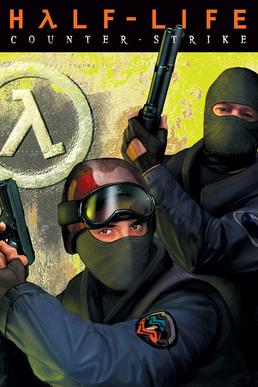
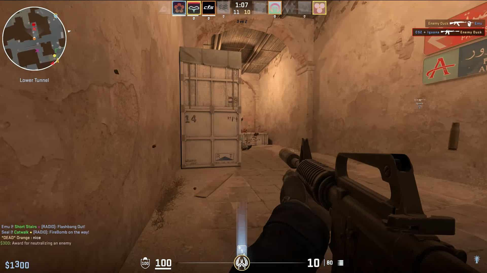
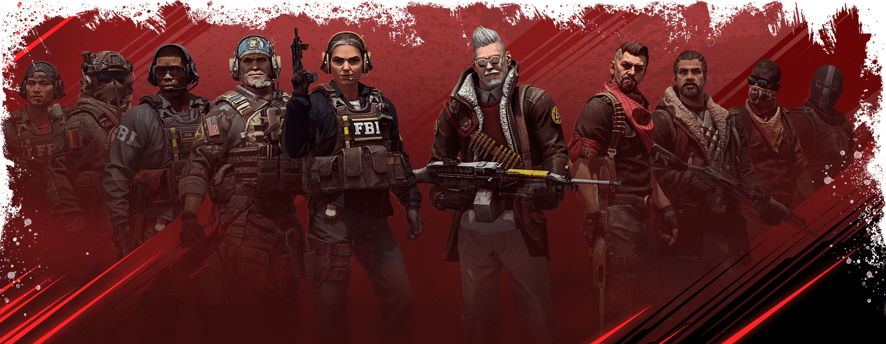
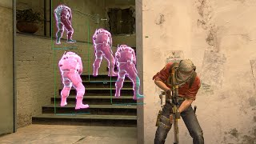

 Counter-Strike
(также известная как Half-Life: Counter-Strike или Counter-Strike 1.6) —
многопользовательская компьютерная игра в жанре шутера от первого лица, разработанная и выпущенная для
Windows американской компанией Valve. Первоначально Counter-Strike представляла собой пользовательскую
модификацию к игре Half-Life, разработанную энтузиастами Минем Ле и Джессом Клиффом в 1999 году; в
дальнейшем Valve наняла обоих разработчиков на работу и приобрела у них права интеллектуальной
собственности на игру, в 2000 году выпустив доработанную версию Counter-Strike уже как самостоятельную
игру. Игра была в разные годы портирована на ряд платформ, в том числе macOS, Linux и Xbox.
Игровой процесс Counter-Strike проходит в формате разбитого на несколько раундов матча между двумя
командами игроков, одна из которых играет роль «террористов», а другая — контртеррористического
спецназа; перед началом каждого матча игроки выбирают «карту», на которой будет происходить сражение.
Команда может добиться победы в раунде, просто перебив всех противников либо выполнив определённые
задания, которые могут отличаться для разных карт. В начале каждого раунда игроки могут купить оружие и
вспомогательное снаряжение за игровую валюту; по итогам каждого раунда игроки получают определённую
сумму виртуальных денег, которые могут использовать для приобретения более мощного и эффективного оружия
в следующем раунде.
Counter-Strike получила чрезвычайно высокие отзывы критиков и приобрела огромную популярность среди
игроков, в том числе как одна из наиболее популярных киберспортивных дисциплин в 2000-х годах. В
дальнейшем был выпущен ряд игр-продолжений и наследников — серия Counter-Strike; в прессе и среди
игроков для более точного указания на первую игру в серии также используется название Counter-Strike
1.6, где «1.6» — последнее крупное обновление, которое игра получила в 2003 году[источник?].
Этот раздел имеет чрезмерный объём или содержит маловажные подробности неэнциклопедичного характера.
Если вы не согласны с этим, пожалуйста, покажите в тексте существенность излагаемого материала. В
противном случае раздел может быть удалён. Подробности могут быть на странице обсуждения. (7 мая 2023)
Кратко: раздел взят с Викии, источников почти нет, указания вплоть до кнопок, нужно либо чистить, либо
удалять.
В разделе не хватает ссылок на источники (см. рекомендации по поиску).
Информация должна быть проверяема, иначе она может быть удалена. Вы можете отредактировать статью,
добавив ссылки на авторитетные источники в виде сносок. (14 ноября 2022)
Типы игры
В зависимости от типа игровой карты задания могут быть следующими:
Hostage Rescue («Спасение заложников»)
Целью игры является вывод заложников (для CT) и их удерживание (для T) либо полное уничтожение врага. CT
выигрывают, если до окончания времени раунда успеют довести всех заложников до зоны спасения, а если
будут выведены не все — победят террористы. Заложники на радаре отображаются (для CT) голубыми точками.
При спасении заложника всем игрокам передаётся голосовое сообщение Hostage has been rescued, а при
спасении всех заложников выводится соответствующее сообщение на экран. Чтобы заставить следовать
заложника за собой, игрок CT должен нажать Use (по умолчанию кнопка E), находясь рядом с заложником (при
этом слова, произносимые заложниками, хорошо слышны на большом расстоянии). Чтобы заложник перестал
следовать за CT, игрок должен снова нажать Use. В отличие от террористов игрок CT может толкать
заложников, если те блокируют его. Плохо продумано поведение заложников — следуя за CT, они не могут
приседать, открывать двери, спрыгивая с большой высоты, не теряют hp. Если заложник отстал, к нему нужно
заново подойти и нажать Use. При нахождении в зоне спасения у игроков CT слева появляется значок
«R».
Обычно названия карт этого сценария начинаются с префикса cs_. Такие появились в хронологическом порядке
первыми — в beta 1.0, самыми первыми картами были cs_siege, cs_mansion, cs_wpndepot и cs_prison.
Bomb / Defuse («Заминировать/Обезвредить»)
Задачей для команды террористов является подрыв бомбы в определённом месте, которых на сбалансированных картах обычно два. Бомбу несёт один из игроков команды (bomber), но может её скинуть как обычное оружие, а другой подобрать. Этот игрок отображается на радаре оранжевым цветом; будучи скинутой, сама бомба обозначается мигающей оранжевой точкой (или с учётом высоты — двумя перпендикулярными линиями), а при закладке — мигающим крестом (только для команды Т). У игрока, несущего бомбу, есть рюкзак на спине, а наличие бомбы отображается слева на экране соответствующим значком. При нахождении в зоне закладки значок начинает мигать красным цветом. В момент закладки всем игрокам обеих команд передаётся сообщение The bomb has been planted. У CT есть возможность сократить время разминирования бомбы, купив Defusal Kit (набор сапёра, с которым оно составляет 5 секунд (без него — 10 секунд). Время закладки бомбы составляет всего 3 секунды. Победитель раунда определяется двумя взаимоисключающими способами, в зависимости от того, была ли заложена бомба:
Если была: бомба взорвалась — побеждают террористы. Если её успели обезвредить — побеждает спецназ. Соотношение убитых в обеих командах не учитывается. Если не была: проигрывает та команда, в которой не осталось живых игроков. Первые карты этого типа появились в beta 4.0, ими были de_nuke, de_dust.
Управление и интерфейс
Как и большинство шутеров от первого лица, в Counter-Strike используется управление клавиатурой и мышью. По умолчанию с помощью мыши происходит управление ориентацией в пространстве (поворот), стрельба, включение второй функции оружия и его переключение. С помощью клавиатуры — перемещение и иные функции.
Интерфейс представляет собой HUD-систему. На экране, по его периферии, отображаются:
Радар. Более светлая область представляет угол зрения игрока. На радаре отображаются игроки своей команды, заложники (голубым цветом), бомба (оранжевым), причём объекты отображаются с учётом высоты — точкой или двумя перпендикулярными линиями. Есть возможность отметить игроков (светло-оранжевым цветом) командой trackplayer и отменить это действие командой clearplayers. Выбор оружия. Значки показывают выбранное оружие (на примере HK MP5), номер — наличие первичного (primary), вторичного (secondary) оружия, ножа, гранат и бомбы (1, 2, 3, 4, 5 соответственно). Полоска — запас патронов. Убийства отображаются в правом верхнем углу. Показывается тип оружия, убийство попаданием или не попаданием в голову (headshot), или самоубийство. Фонарь. Отображается при включённом или выключенном фонарике. Голосовая связь. Имя справа соответствует нику говорящего через микрофон игрока. Сумма денег на счету. Не более $16000 по умолчанию. Количество патронов в магазине, общее количество в запасе и их калибр. Здоровье. Изначально имеется 100 % (Hit Points[5] или Health Points[6], hp). Броня. В случае покупки бронежилета с каской появляется соответствующий значок, в случае покупки бронежилета отдельно — просто значок в виде щита. Изначально 0 % (Armor Points, ap) Индикатор управления транспортным средством. Остаток времени до конца раунда. В случае, если до конца остаётся менее 30 секунд, значок начинает мигать красным цветом. Прицел. Возможно изменение цвета, размера, прозрачности и поведения прицела. Индикатор, связанный с заданием карты. Наличие бомбы у террориста, Rescue-зона, зона для вывода VIP, зона для побега террористов на Escape-картах. Значки начинают светиться красным, в случае нахождения в соответствующей зоне (например, зоне закладки бомбы). Значок в виде щипцов — наличие набора сапёра у контр-террориста. Зона покупки символизируется появлением соответствующего значка. «Опасные условия» также символизируются соответствующим значком (долгое нахождение под водой, попадание в огонь и др.) Чат игры отображается слева внизу. В игре также ведётся статистика смертей и убийств, отображается задержка до сервера. Возможна частичная настройка управления и внешнего вида через главное меню, однако через консоль возможна гораздо более тонкая настройка.
Игровые персонажи
 На выбор игроков создатели Counter-Strike предлагают для каждой команды несколько различных игровых моделей, отличающихся друг от друга внешним обликом, маскирующим игрока на различных картах. Для каждой команды доступно по четыре игровых модели. Для команды спецназа — американский SEAL Team 6, немецкий GSG-9, английский SAS и французский GIGN; для команды террористов — восточноевропейский Phoenix Connexion (Подразделение Феникс), ближневосточный Elite Crew (Элитное подразделение), шведские Arctic Avengers (Арктические мстители), и средневосточные Guerilla Warfare (Повстанцы). Помимо этих моделей, в игре есть особый скин для VIP-игрока (на картах типа VIP assassination) и особые модели заложников (на картах Hostage Rescue). В дополнении Counter-Strike: Condition Zero также присутствуют модели русской Альфы и американского Midwest Militia (Ополчение среднего запада).
У всех моделей от первого лица голые руки, хотя у большинства закрытые камуфляжи. Однако, в Counter-Strike: Global Offensive для каждого скина была специально сделана своя модель рук, поэтому руки каждой модели выглядят от первого лица так же, как и от третьего.
Оружие
Для всего арсенала игрока предоставлено 5 слотов: первый — для первичного оружия (то есть дробовиков, пистолетов-пулемётов, винтовок и пулемёта); второй — для пистолета (вторичного оружия); третий — для ножа; четвёртый — для гранат (единственный слот, который может вмещать в себя несколько видов оружия); пятый — для бомбы (её могут носить только террористы на картах типа Bomb/Defuse).
Читерство
 Counter-Strike пользуется большой популярностью, из-за чего страдают обычные игроки. За время существования игры было разработано множество способов обмана и получения преимущества нечестным путём. К основным типам читерства относят:
Использование сторонних программ, а равно перенастройка драйверов системы и использование сторонних (нестандартных) игровых моделей.
Использование скриптов (например Attack+Use, No-Recoil и д. р.), а также недокументированных возможностей игры — багов (например mapswimming, silentbomb, pixelwalking, flashbang bug, jump bug, edge bug).
Тонкая настройка графики и сетевого взаимодействия через консоль. Мониторинг и иные «не компьютерные» способы обмана. Правила многих чемпионатов строго регламентируют моменты, касающиеся использования тех или иных приёмов в игре, а за нарушение регламента следуют санкции вплоть до исключения из лиг, в рамках которых проводятся чемпионаты[10][11]. На public-серверах за выполнением правил следят администраторы этих серверов, возможна работа античитерских программ. На многих серверах читерство карается баном.
Существенный дисбаланс в игру вносят именно сторонние чит-программы (или просто читы), поскольку они в корне позволяют менять физику игры и работу графического движка. Основные типы читерства, реализуемого в чит-программах:
Wallhacking (wallhack) — возможность видеть сквозь стены врагов и объекты карты.
Aimbotting (aimbot) (auto-aim) и Triggerbot — автоматическая наводка прицела игрока на врага и автоматический выстрел.
SpeedHacking (speedhack) — возможность увеличения скорости (вплоть до моментальной) выполнения действий (бег, стрельба), в Counter-Strike её редко используют, но она даёт существенное преимущество над другими игроками.
Bhop (auto bunnyhopping) — возможность осуществлять прыжки, зажав одну клавишу. С помощью этого можно развивать огромную скорость и иметь преимущество над врагом.
ESP (ExtraSensory Perception) — показывает детальную информацию о враге.
KnifeBot — осуществляет автоматическую атаку ножом при достаточном приближении к врагу Существуют иные возможности, даваемые чит-программами (Lambert, WireFrame, No-Recoil и др.). Самые распространённые чит-базы в интернете содержат очень много видов читов, в том числе и вышеперечисленных. Существуют мнения, что читерские программы на сегодняшний день часто являются способом распространения вирусов, троянов и других вредоносных программ. Способами борьбы с читерством являются администраторский контроль, использование серверных либо клиентских античитов.
Стандартным решением является Valve Anti-Cheat — античитерская программа, разработанная Valve Corporation и реализуемая на базе Steam. Поставляется вместе с игрой, начиная с версии 1.4 (2002 год)[12]. Эффективность данной программы находится под вопросом, так как большинство читов обходят эту защиту.
Серверные античиты не имеют клиентской части, то есть программы, запускаемой на компьютере игрока. Их действие, как правило, основано на выявлении алиасов (последовательностей читерских команд), нажатий чит-клавиш (которые не используются в игре, при этом часто используются для активации чит-функций), либо просто блокируют передачу координат противников, если игрок их не должен видеть (находится за стеной). Большинство подобных решений реализованы как плагины к Metamod либо AmxModX. Примером является давно не обновляемый разработчиками, но всё ещё эффективный Reallite HLGuard[13]
Клиентские античиты — специальные программы, запускаемые игроками на своих компьютерах. Они сканируют память компьютера на предмет наличия известных им читов. Наиболее популярными являются UCP, MyAC, EAC и FaceIT. На некоторых серверах наличие программы-античита является обязательным для успешного подключения к серверу.